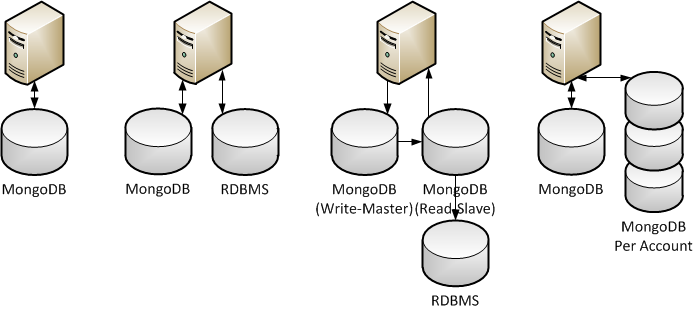

An Introduction to

Who is this dude?
My name is JC Grubbs
I'm a consultant at
And the co-founder of
I blog at http://www.thegrubbsian.com
Find me @thegrubbsian on the Twitter
What is this "NoSQL" thing?
NoSQL is an umbrella term which describes a variety of non-relational database approaches. Most
databases in this class fall into one of the following categories:
- Object Databases (DB40, Matisse)
- Key-Value Stores (Redis, Tokyo Cabinet)
- Document Databases (CouchDB, MongoDB, RavenDB)
- Column Family (Google BigTable, Cassandra)
- Graph Databases (Neo4j)
There are many others, but they are all trying to solve essentially the same problems:
- Horizontal Scaling and Distribution
- Developer Productivity
- High Performance and Throughput
What is MongoDB
- Schema Free
- Document Oriented
- High Performance
- Scalable
- Multi-Platform
What MongoDB is Not
- Key/Value Store
- Relational
- Fully ACID Compliant
Use Cases
You might want to consider MongoDB if:
- You're dealing with document/nested style data.
- You'd rather scale horizontally than get a bigger server.
- You have a rapid write scenario.
- Your data is dynamic in some way.
- You can live with relaxed ACID compliance (BASE).
Anti-Use Cases
You probably don't want to use MongoDB if:
- Your domain is inherently relational and nested structures don't make sense.
- You're tied to a relational reporting solution.
- You need 100% ACID compliance.
- You require traditional transactions over multiple collections/tables.
- Your DBA is an old school curmudgeon.
A Few Simple Usage Scenarios

Because MongoDB is so flexible and deployment/install is so simple, it lends itself
to a number of potential use cases for scaling and optimization.
MongoDB Server
- The MongoDB server runs as a console or daemon/service.
- The server will use one thread per TCP connection.
- Most drivers implement some kind of connection pooling, this is the recommended use.
- Data is stored in two files on disk. The default location is '/data/db' but can be changed.
- While the server runs it manages a memory mapped file per database.
- Mongo will consume as much memory as makes sense but will gracefully handle lower memory situations.
- Using the --dur option when starting the server will put MongoDB in journaling mode which is the recommended approach for single server instances as this is vastly more durable.
http://www.mongodb.org/display/DOCS/Connections
http://www.mongodb.org/display/DOCS/Starting+and+Stopping+Mongo
Documents and Collections
MongoDB stores data in documents. Think of them as JSON structures.
{
OrderNumber: 123,
OrderDate: new Date(2010,1,1),
Items: [
{ SKU: 12345, Name: "Hammer" },
{ SKU: 54321, Name: "Box of Nails" },
{ SKU: 13579, Name: "Pine Planks" }
],
CreditCard: {
Type: "Visa",
Number: 1234123412341234,
Expiration: new Date(2011,7,1)
}
}
- Collections are just named sets of root documents.
- You might equate a document with a row and collections with tables.
- Collections can contain documents of varying shapes.
- Individual documents may not exceed 16 Mb in size.
BSON
MongoDB stores data in BSON, which is a JSON-like binary format.
{"hello": "world"}
"\x16\x00\x00\x00\x02hello\x00
\x06\x00\x00\x00world\x00\x00"
{"SomeArray": ["awesome", 5.05, 1986]}
"1\x00\x00\x00\x04SomeArray\x00&\x00
\x00\x00\x020\x00\x08\x00\x00
\x00awesome\x00\x011\x00333333
\x14@\x102\x00\xc2\x07\x00\x00
\x00\x00"
http://bsonspec.org
- Serialization and deserialization of data structures occurs in the language drivers, not on the server itself.
- Each driver may implement the BSON specification in a manner that is most efficient for that platform.
Document Identity
- Every root document must have an
_id property.
- MongoDB implements a special BSON type called ObjectId to uniquely identify documents.
- You can use types other than ObjectId for the
_id property.
- If you do not assign a value for
_id the database will create the attribute for you.
ObjectId is a 12-byte unique identifier made up of the following:
| 0 | 1 | 2 | 3 | 4 | 5 | 6 |
7 | 8 | 9 | 10 | 11 |
| time | machine |
pid | inc |
http://www.mongodb.org/display/DOCS/Object+IDs
Commands and the Shell
- Commands are issued to the server as MongoDB documents.
- MongoDB comes with an interactive JavaScript based shell that is the easiest
way to interact with the database for development and administration.
The following slides are examples of the query syntax as issued within the shell.
http://www.mongodb.org/display/DOCS/mongo+-+The+Interactive+Shell
Query Syntax
MongoDB has a unique but powerful query syntax. Even so, most of the language
drivers abstract it in some way.
// where first name is 'Bill'
db.User.find({ FirstName: "Bill" });
// where first name is 'Bill' return only _id and LastName
db.User.find({ FirstName: "Bill" }, { _id: 1, LastName: 1 });
// where age is greater than 35
db.User.find({ Age: { $gt: 35 } });
// where department's director is 'John'
db.User.find({ "Department.Director.FirstName": "John" });
// sort by last name ascending and first name descending
db.User.find().sort({ LastName: 1, FirstName: -1 });
http://www.mongodb.org/display/DOCS/Querying
http://www.mongodb.org/display/DOCS/SQL+to+Mongo+Mapping+Chart
Query Syntax (cont.)
// limiting results
db.User.find({ Age: { $gt: 5 } }).skip(20).limit(10);
db.User.find({ Age: { $gt: 5 } }, 20, 10);
// return the count of a query
db.User.find({ "Department.Name": "IT" }).count();
// return a distinct list of a single value
db.User.distinct("LastName");
// check the existence of at least one document
db.User.find({ Username: { $exists: "sbarrows" } });
// check if a value is in a list
db.User.find({ "Department.Number": { $in: [75,22,34,102] } });
http://www.mongodb.org/display/DOCS/Advanced+Queries
Query Syntax (cont. again)
// inserting a new document
db.User.save({ FirstName: "William", LastName: "Edwards" });
// updating a property of a document
db.User.update({ LastName: "Edwards" }, { FirstName: "Bill" });
// deleting a document
db.User.remove({ Age: { $lt: 35 } });
// using functions to locate documents (won't use indexes)
db.User.find(function () { return this.Department.Name == "IT"; });
// return only the first n for a child array
db.User.find({}, { PreviousJobs: { $slice: 5 } });
Indexing
- Supports basic indexing scenarios you might find in a relational store.
- Indices are stored as document references in a simple b-tree structure.
- Indices can be created on embedded documents.
- An index on an embedded array will index each item in the array. (Very powerful especially with sparse attributes).
- Supports geospatial indexing which enables additional query operators.
Current Limitations
- A collection can only have 40 indices defined.
- Queries only use one index at a time.
- Map/Reduce does not use indices.
- Most RegEx queries will not use an index.
http://www.mongodb.org/display/DOCS/Indexes
Indexing (cont.)
// create an index on the Username attribute
db.User.ensureIndex({ Username: 1 });
// create a unique index on the Username attribute
db.User.ensureIndex({ Username: 1 }, { unique: true });
// create a multi-attribute index
db.User.ensureIndex({ Username: 1, "Department.ID": 1 });
// rebuilding an index
db.User.reIndex();
// dropping an index
db.User.dropIndexes();
db.User.dropIndex({ Username: 1 })
Map/Reduce
In MongoDB Map/Reduce works by taking map and reduce functions and generating
a new collection or returning the results "inline".
var map = function () {
this.Sales.forEach(function (sale) {
emit(sale.Date, { count: 1 });
});
};
var reduce = function (key, value) {
var total = 0;
for (var i = 0; i < value.length; i++) {
total += value[i].count;
}
return { count: total }
};
var mr = db.Sales.mapReduce(map, reduce);
db[mr.result].find();
http://www.mongodb.org/display/DOCS/MapReduce
Map/Reduce (cont.)
In the previous example, the following result set would be produced.
{ _id: "1/1/2011", count: 32 },
{ _id: "1/2/2011", count: 45 },
{ _id: "1/3/2011", count: 27 },
{ _id: "1/4/2011", count: 66 }
Inline: Returns the result set inline.
db.Sales.mapReduce(map, reduce, { out: { inline: 1 }});
Merge: Merges the new result set with an existing collection (overwrites existing keys).
db.Sales.mapReduce(map, reduce, { out: { merge: "SalesTrends" }});
Reduce: Same as 'merge' but applies the reduce function for existing keys.
db.Sales.mapReduce(map, reduce, { out: { reduce: "SalesTrends" }});
GridFS
- Provides a way to store large binary data across multiple documents.
- Allows for range operations, such as fetching the first N bytes.
- Works by creating a meta-data collection, and then N file collections.
- Like BSON, GridFS is implemented in the driver and supported by the server.
GridFS Specification
Import/Export/Backup
The MongoDB distribution comes with the following administrative tools:
- mongoimport: Imports a collection into MongoDB from JSON or CSV formats.
- mongoexport: Exports a collection from MongoDB to JSON or CSV format.
- mongodump: Dumps an entire database or collection in binary format.
- mongorestore: Restores the contents of a mongodump file to a database.
- copyDatabase Command: Copys a database from one server to another.
http://www.mongodb.org/display/DOCS/Import+Export+Tools
Replication - Master/Slave

- MongoDB avoids multi-master states at all costs to avoid merge conflicts.
- Therefore in Master/Slave the Slave is read-only.
- In a state in which Master fails, the drivers should pass read traffic to the Slave.
mongod --master
mongod --slave --source localhost:27017
There are a number of other configuration options for delayed replication, etc.
http://www.mongodb.org/display/DOCS/Replication
Replication - Replica Sets

- Replica sets can contain more than one read-only server.
- In replica sets servers are in one of three roles: Primary, Secondary, and Passive.
- Primary: Support read/write operations.
- Secondary: Support read operations and can be elected as Primary in the event of failures.
- Passive: Support read operations but cannot be elected as Primary.
mongod --replSet setname
db.runCommand({ replSetInitiate: {
members: [
{ _id: 0, host: "db1.acme.com" },
{ _id: 0, host: "db2.acme.com" },
{ _id: 0, host: "db3.acme.com", priority: 0 } // passive
]
}})
http://www.mongodb.org/display/DOCS/Replica+Sets
Sharding
Sharding is the scale-out mechanism that MongoDB provides for splitting collections over multiple machines.

- Sharding divides up a collection across many machines in a key space.
- The MongoS process acts as a router and appears as a single process to client requests.
- The recommended practice is to keep shards in a replica set or use the --dur flag for single server shards.
http://www.mongodb.org/display/DOCS/Sharding+Introduction
Profiling
Enable profiling from the shell:
// profiling levels:
// 0 = off
// 1 = operations > 100ms
// 2 = all operations
db.setProfilingLevel(2);
The profiling logs to the system.profile collection and you can perform
any query against the documents in this collection.
Support

- The open source development of MongoDB is funded by 10gen who also offer commercial support, training, and consulting.
- The mailing list is extremely active and getting free community support is usually very easy.
- Documentation is fairly extensive at mongodb.org.
NoRM
NoRM is a .NET library for interacting with MongoDB; it provides the following:
- Strongly Typed Collection Abstraction
- Complete LINQ Provider for MongoDB Queries
- Connection Pooling
- High Performance BSON Serializer
- An Expando Implementation for Dynamic Data
- Configuration API for Collection/Property Aliasing
NoRMatic
NoRMatic is a companion library to NoRM that provides some API sugar and additional features.
- ActiveRecord style interface
- Callbacks and Hooks for CRUD operations
- Soft Deleting
- Versioning
- Simple Auditing
https://github.com/thegrubbsian/NoRMatic
}